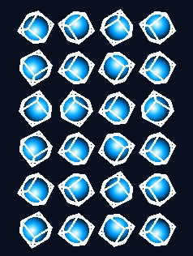

3dLines demonstrates basic graphics and key input handling.

This example is included in the MoSync SDK installation in the /examples folder. For information on importing the examples into your workspace, see Importing the Examples.
When started the mobile/emulator screen appears as graphics labeled "Start Screen" where the logo wireframe rotates